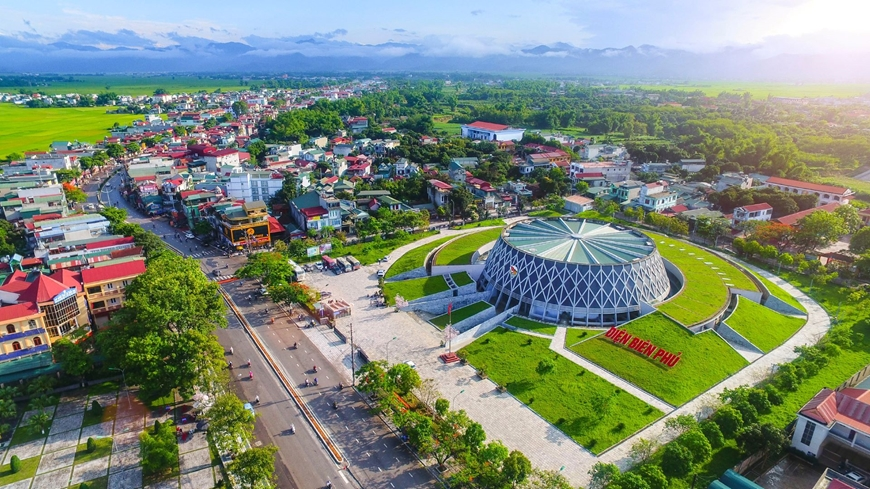

THCS TRƯNG VƯƠNG
Vị thế lẫy lừng
Bảy năm sau sự kiện Điện Biên Phủ, năm 1961, ký giả người Pháp J.Roa đã có sự so sánh khá thú vị trong cuốn sách “Trận Điện Biên Phủ”: "Trên toàn thế giới, trận Waterloo cũng ít tiếng vang hơn Điện Biên Phủ... Đó là một trong những thất bại lớn của phương Tây, báo hiệu sự tan rã của các thuộc địa và sự cáo chung của một nền cộng hòa. Tiếng sấm của sự kiện Điện Biên Phủ vẫn còn đang âm vang”.
Xét về ý nghĩa lịch sử, tầm ảnh hưởng của trận đánh, dễ nhận thấy sự so sánh trên là khách quan. Và thực tế nhiều năm sau nữa, thế hệ các nhà nghiên cứu, nhà sử học quốc tế ngày càng làm sáng tỏ hơn nữa vị thế lẫy lừng của Chiến thắng Điện Biên Phủ đóng góp cho phong trào giải phóng dân tộc trên toàn thế giới và là ngọn cờ, biểu trưng cho tinh thần yêu chuộng hòa bình của nhân loại.

Năm 2004, học giả R.Phrăng, Trường Đại học Paris 1 Panthéon-Sorbonne (Pháp), trong Hội thảo “Điện Biên Phủ-50 năm nhìn lại” do Trường Đại học Khoa học Xã hội và Nhân văn, Đại học Quốc gia Hà Nội và Trường Đại học Paris 1 Panthéon-Sorbonne tổ chức vẫn nhận định: “Âm vang về Điện Biên Phủ như là tiếng sấm trên bầu trời Pháp... Điện Biên Phủ quả thực được xem như là một sự thất bại và cũng là sự phá sản của nước Pháp”.
Tại cuộc hội thảo này, học giả J.C.Rô-mê, Đại học Tổng hợp Strabua III (Pháp) cho rằng, với trận Điện Biên Phủ, năm 1954 trở thành “một năm thay đổi cục diện... Năm 1954 quả là một năm quan trọng đối với lịch sử nước Pháp và lịch sử Việt Nam. Nhưng vượt ra khỏi phạm vi của mảnh đất thuộc địa này, người ta còn coi đây là năm bản lề trong lịch sử xung đột Đông-Tây và trong lịch sử quan hệ quốc tế nói chung. Do nhiều yếu tố khác nhau, thế cân bằng lực lượng bị biến đổi từ 1954 và cả những năm sau nữa”.
Trong dịp kỷ niệm 50 năm sự kiện Điện Biên Phủ (1954-2004), tờ báo nổi tiếng ở Pháp L’Express đã dành hơn 20 trang trong một số báo để đăng phóng sự của nhà báo Yves Stavridès “Từ Đông Dương đến Việt Nam, một saga lạ thường”. Bài báo cho biết, người Pháp vẫn không quên được Điện Biên Phủ. Điện Biên Phủ khiến nước Pháp mất đi một thuộc địa rộng lớn và nhiều người con ưu tú (để tưởng nhớ, khóa học năm 1956 của Trường Võ bị Saint-Cyr nổi tiếng tự gọi mình là khóa Điện Biên Phủ).
10 năm sau, vào năm 2014, kỷ niệm 60 năm sự kiện Điện Biên Phủ, Hãng tin France24 của Pháp đã dành riêng một bài ca ngợi Chiến thắng Điện Biên Phủ vang dội của Việt Nam. France24 ca ngợi Chiến thắng Điện Biên Phủ ngày 7-5-1954 không chỉ là “một cú đánh anh hùng đánh bại thực dân mà còn là một thời điểm quan trọng của lịch sử đất nước”. Bài báo mô tả chi tiết cuộc chiến Điện Biên Phủ và gọi đây là một “sai lầm lịch sử” của quân đội Pháp. France24 cũng dành những từ như “anh hùng”, “thiên tài chiến thuật” để mô tả Đại tướng Võ Nguyên Giáp. Bài báo viết: “Tướng Giáp đã làm nên cuộc chiến có lẽ là quan trọng nhất trong lịch sử của phong trào giải phóng trên toàn thế giới”.
Vang vọng hào hùng của Chiến thắng Điện Biên Phủ có ý nghĩa quan trọng đối với công tác giáo dục học sinh. Đó mãi là mốc son chói lọi trong lịch sử và là niềm tự hào của dân tộc Việt Nam, góp phần nhân lên lòng yêu nước, lòng tự hào dân tộc cho các em học sinh. Thế hệ trẻ không ngừng thể hiện chí khí, vai trò, trách nhiệm của mình, tiếp tục “dưỡng Tâm trong - rèn Trí sáng - xây Hoài bão lớn”, hoàn thành sứ mệnh vẻ vang của tuổi trẻ, đóng góp xây dựng đất nước ngày càng giàu mạnh, sánh vai với các cường quốc năm châu như lời Bác Hồ đã dạy.
Thắp lửa chống thực dân trên khắp thế giới
Chiến thắng Điện Biên Phủ dưới sự chỉ huy tài tình của Đại tướng Võ Nguyên Giáp không chỉ đem lại độc lập cho các dân tộc ở Đông Dương mà đối với phong trào hòa bình và giải phóng dân tộc trên thế giới, âm vang của Chiến thắng Điện Biên Phủ có tác động và ảnh hưởng to lớn, là tấm gương sáng, tiếp lửa cho cuộc đấu tranh giành độc lập, tự do của các nước Á, Phi, Mỹ Latin.
Từ Điện Biên Phủ, nhân dân các nước thuộc địa đã nhìn ra con đường giải phóng của mình. Điện Biên Phủ đã chứng tỏ rằng, trong thời đại ngày nay, các dân tộc bị thực dân, đế quốc coi là nhược tiểu có thể đánh thắng bè lũ cướp nước để giành lại độc lập dân tộc. Với ý nghĩa là sự đột phá, tấn công vào thành lũy của chủ nghĩa thực dân, cuộc kháng chiến chống thực dân Pháp của nhân dân Việt Nam với đỉnh cao là Chiến thắng Điện Biên Phủ đã mở đầu quá trình sụp đổ hoàn toàn của chủ nghĩa thực dân cũ trên thế giới, cổ vũ nhân dân các nước thuộc địa và phụ thuộc vùng dậy đấu tranh giành quyền độc lập và tự do. Năm 2007, Tổng thống Nam Phi Thabo Mbeki từng khẳng định: "Trong cuộc đấu tranh của chúng tôi, Đại tướng Võ Nguyên Giáp là một trong những vị anh hùng dân tộc”.
Quay trở lại quá khứ, tìm hiểu, dễ nhận thấy Chiến thắng Điện Biên Phủ đã làm đảo lộn chính sách thuộc địa của thực dân Pháp. Trước đây, thực dân Pháp đặt ra Liên hiệp Pháp (Union Francaise) làm khuôn khổ cho nền thống trị Pháp đối với các thuộc địa. Sau thất bại ở Điện Biên Phủ, năm 1958, Pháp lập ra một tổ chức mới gọi là Cộng đồng Pháp với một quy chế tôn trọng quyền của các dân tộc và quyền tự trị cao hơn. Để xoa dịu dư luận thế giới cũng như đối phó với làn sóng đấu tranh đang dâng lên mạnh mẽ ở các thuộc địa, Pháp buộc phải công bố “quyền tự trị” hoặc trao trả độc lập cho nhiều nước ở châu Phi, trước tiên là các nước Bắc Phi, như Tunisia, Morocco.

Và sau mấy chục năm, lời phát biểu của nguyên Tổng thống Nam Phi Thabo Mbeki như một niềm tự hào, sự ghi nhớ công lao của nhân dân Nam Phi với Đại tướng Võ Nguyên Giáp, với dân tộc Việt Nam đã làm nên Chiến thắng Điện Biên Phủ "chấn động địa cầu", tiếp thêm sức mạnh cho nhân dân Nam Phi giành độc lập.
Chiến thắng Điện Biên Phủ thực tế đã giáng một đòn sấm sét vào chủ nghĩa đế quốc nói chung và dẫn tới tan rã toàn bộ khối thuộc địa rộng lớn của thực dân Pháp. Nhiều nước thuộc địa của Pháp đã nổi dậy sau Điện Biên Phủ như một phản ứng dây chuyền. Năm 1961, khi dự Đại hội Công đoàn Việt Nam, Trưởng đoàn đại biểu Tổng Liên đoàn Lao động Guinea khẳng định, cái tên Điện Biên Phủ đã “thổi to ngọn lửa chiến đấu của những người đang cầm khí giới trong tay để chống lại áp bức”. Chiến thắng Điện Biên Phủ đã trở thành một “gương sáng cho các nước Á, Phi anh em đang trong vòng nô dịch”.
Theo cuốn sách "Âm mưu của đế quốc Pháp-Mỹ trong Chiến dịch Điện Biên Phủ", Trưởng đoàn đại biểu Chính phủ nước Cộng hòa Mali tại cuộc mít-tinh chào mừng đoàn ở Hà Nội ngày 5-10-1961 đã nhấn mạnh: “Các đồng chí đã góp phần quyết định vào cuộc đấu tranh của các dân tộc bị áp bức bằng cách chứng minh rằng một dân tộc quyết tâm đấu tranh giành tự do và được những chiến sĩ đã tôi luyện giáo dục và lãnh đạo theo những nguyên lý khoa học đã được thực tế xác nhận là một dân tộc mà không một lực lượng nào có thể quật ngã được”. Đại diện đoàn Chính phủ Mali cũng cho rằng: Chiến thắng Điện Biên Phủ đã mở ra con đường tiến lên độc lập cho các dân tộc bị đế quốc đô hộ.
Tại châu Á, nhân dân các nước bị áp bức đã coi Chiến thắng Điện Biên Phủ là một sự kiện có ý nghĩa lớn lao và sâu sắc đối với sự nghiệp đấu tranh của mình. Tờ Frontline (Ấn Độ), số ra từ ngày 13 đến 26-3-2004 khẳng định rằng, Chiến thắng Điện Biên Phủ “đã thúc đẩy mạnh mẽ phong trào giải phóng dân tộc trên khắp thế giới. Một nước châu Á nhỏ đã đánh bại một cường quốc thực dân châu Âu hùng mạnh”. Còn tại Indonesia, tờ Tin tức Indonesia tổng hợp đánh giá của dư luận và đi đến kết luận: "Việc giải phóng Điện Biên Phủ chứng minh nhân dân châu Á có đủ khả năng kết thúc lịch sử của bọn thực dân âm mưu dùng lực lượng vũ trang để thực hiện dục vọng tham lam của chúng".
Ở phía Tây bán cầu-khu vực Mỹ Latin xa xôi, nơi bị cách biệt với các lục địa khác bởi hai đại dương, tin Chiến thắng Điện Biên Phủ của một Việt Nam anh hùng vẫn dấy lên trong họ những tình cảm cách mạng sôi sục. Một đại biểu Argentina tham dự Hội nghị hòa bình thế giới Helsinki (tại Phần Lan, tháng 6-1955) đã nói lên điều đó với đại biểu Việt Nam: “Xin thú thật với các bạn là nước chúng tôi ở cách xa Việt Nam hàng vạn cây số nên có nhiều người trước kia không biết gì về Việt Nam, thậm chí cái tên Việt Nam cũng không biết nữa. Nhưng ngày nay thì những người đó ít nhất cũng biết Việt Nam là gì. Đó là Việt Nam-Hồ Chí Minh, Việt Nam-Điện Biên Phủ!”.
Thay lời kết: Chiến thắng Điện Biên Phủ không chỉ là sự kiện đỉnh cao trong cuộc kháng chiến chống Pháp và can thiệp Mỹ của nhân dân Việt Nam mà sự kiện này đã châm ngòi, khởi đầu cho sự sụp đổ của hệ thống chủ nghĩa thực dân; khơi nguồn cho phong trào nổi dậy giành độc lập dân tộc cho các nước thuộc địa trên toàn thế giới! Sau 70 năm, âm vang Điện Biên Phủ-Việt Nam-Hồ Chí Minh-Võ Nguyên Giáp vẫn sống động trong dư luận toàn cầu. Nhiều nơi trên thế giới nhắc đến Chiến thắng Điện Biên Phủ như một sự kiện lịch sử của nhân dân yêu chuộng hòa bình và lẽ phải.